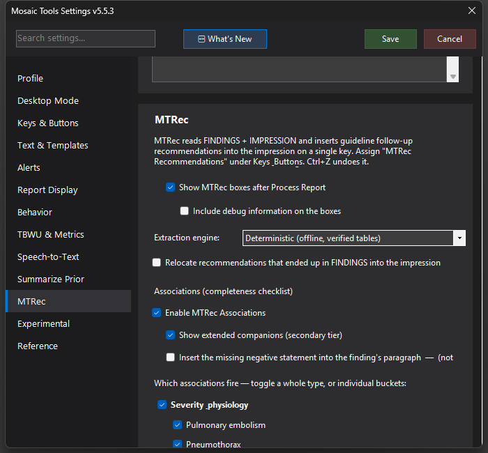

MTRec Recommendations
The in-house, deterministic recommendation engine — detects incidental findings in your report and merges the matching guideline follow-up recommendation, with citation, into the impression on a single key.


What it does
MTRec reads your FINDINGS and IMPRESSION and, on one keypress, inserts guideline follow-up recommendations for the incidental findings it detects — pulmonary nodules, thyroid, adrenal, renal, ovarian, liver, gallbladder, spleen, lymph nodes, biliary, pancreatic, AAA/thoracic aorta, plus trauma grading. Every recommendation ends with its source: Fleischner 2017, Bosniak v2019, ACR TI-RADS, O-RADS, the ACR Incidental Findings white papers, SRU gallbladder consensus, SVS aorta guidelines, AAST organ injury scaling (spleen/liver/kidney, 2025 kidney update, plus chest-wall injury grading), and more.
The safety contract is the point: no AI ever authors a clinical number. Every threshold comes from verified guideline tables, the engine runs entirely offline inside MosaicTools, and its behavior is pinned by 530+ self-tests. It replaced the external RecoMD service — no agent, no window-scraping, instant.
How to turn it on / set it up
Settings → MTRec → Enable MTRec recommendation engine, then assign MTRec Recommendations to a key or mic button under Keys & Buttons. Optional settings on the same tab:
- Extraction engine — locked to "Deterministic (offline, verified tables)". An "AI-assisted" mode is present in the UI but disabled for now (not ready for release); the deterministic engine is always what runs.
- Relocate recommendations that ended up in FINDINGS into the impression (R6) — off by default.
Using it
Press the key after your findings are in; recommendations merge into the impression, placed last. It's smart about noise: it reports the largest lesion with multiplicity/laterality, respects stability ("unchanged for 3 years" clears the guideline window instead of restarting the clock), reads the clinical history (no incidental-nodule follow-up in a known-cancer study), and replaces a matching point already in your impression rather than duplicating it. Ctrl+Z undoes the whole insert.
Thyroid, ovarian, renal, and — since 5.5.8 — simple hepatic cysts and nodules are always carried into the impression (renal/thyroid/ovarian since 5.5.4), independent of the relocate-recommendations setting — so an incidental cyst or nodule you dictate always gets its impression line, even when it needs no guideline follow-up. Since 5.5.30 a solid ("non-cystic") ovarian/adnexal mass is no longer mislabeled an "ovarian cyst" — it correctly routes to the solid-lesion recommendation (dedicated pelvic ultrasound plus gynecology/gyn-onc evaluation).
Tips & gotchas
- With Show MTRec boxes after Process Report on, you rarely need the manual key — see the MTRec boxes page.
- Fixed in 5.6.1: a nodule described as "semisolid" was being managed as a pure ground-glass nodule. It now follows the part-solid Fleischner pathway — CT at 3-6 months to confirm, then annual CT for 5 years — rather than the ground-glass schedule (6-12 months, then every 2 years). Any nodule that names a solid component is treated as part-solid, whatever the wording.
- Fixed in 5.6.1: the solid component of a part-solid nodule is now sized from the number attached to it. Previously, when the whole-nodule size sat closer in the sentence — "…measuring 0.9 x 1.0 cm with a solid component measuring 0.3 cm" — the whole-nodule size could be read as the component, turning a 3 mm component into 10 mm and wrongly recommending PET/CT or tissue sampling.
- A recommendation you disagree with is a keypress to undo — and the opt-in box-level debug mode (MTRec settings) captures the case for a fix.